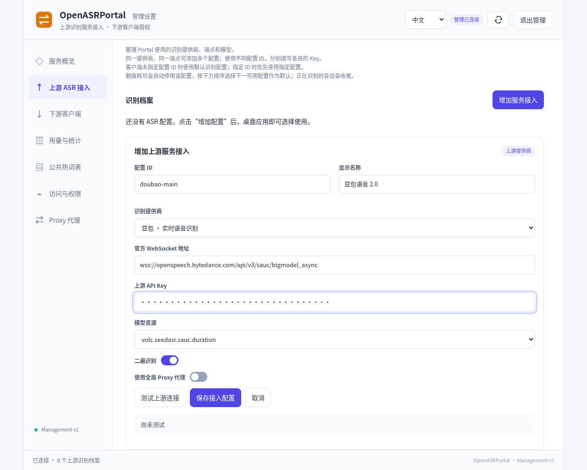
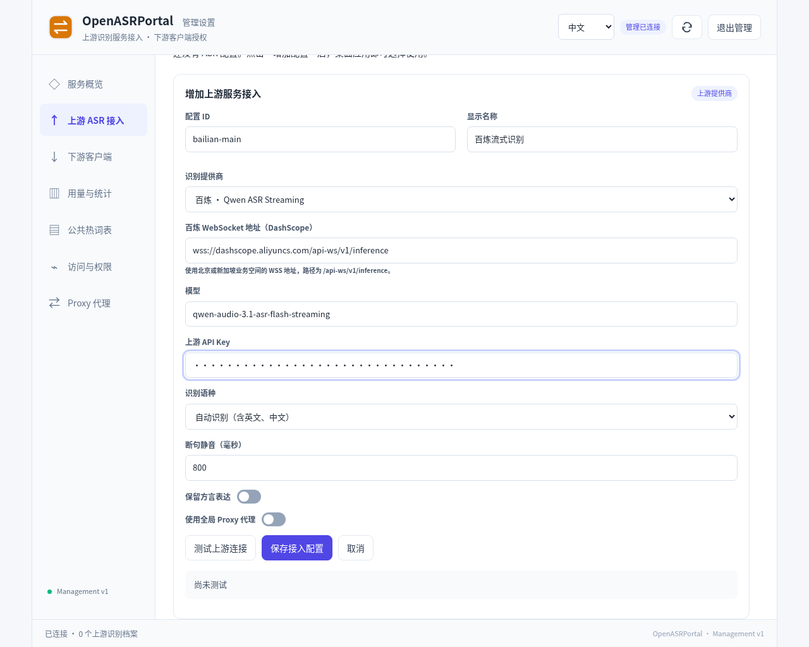
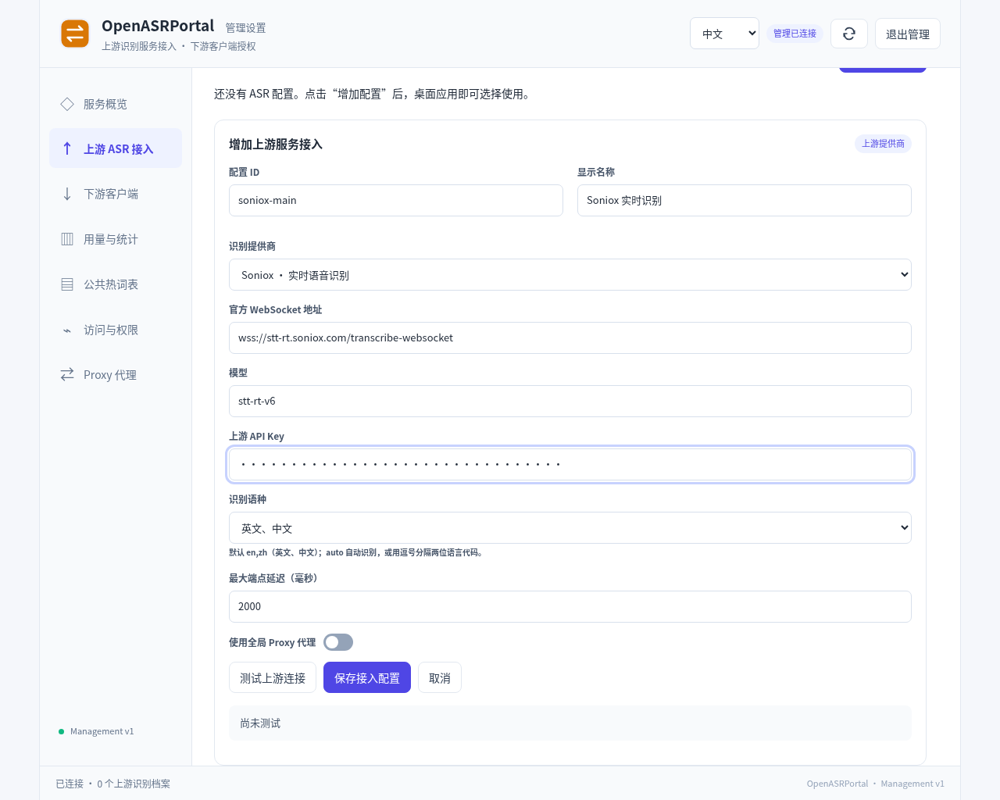
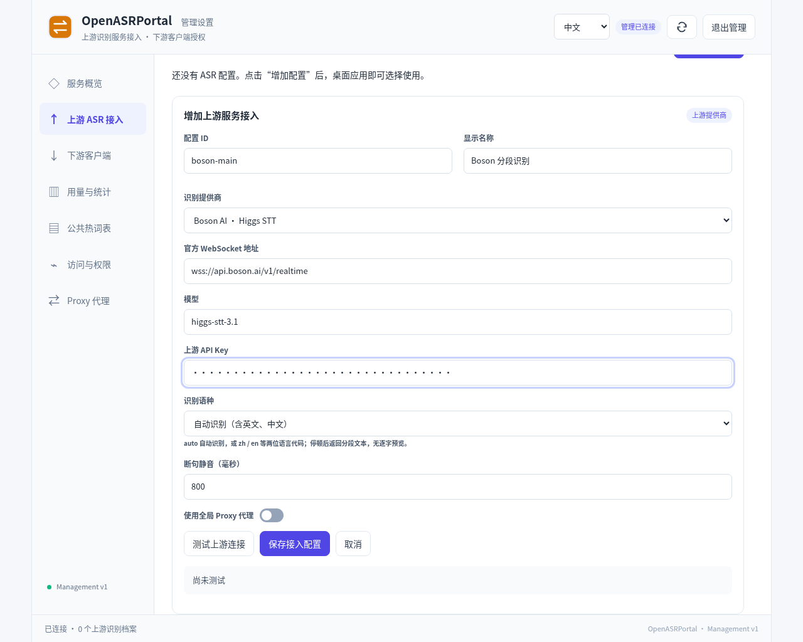
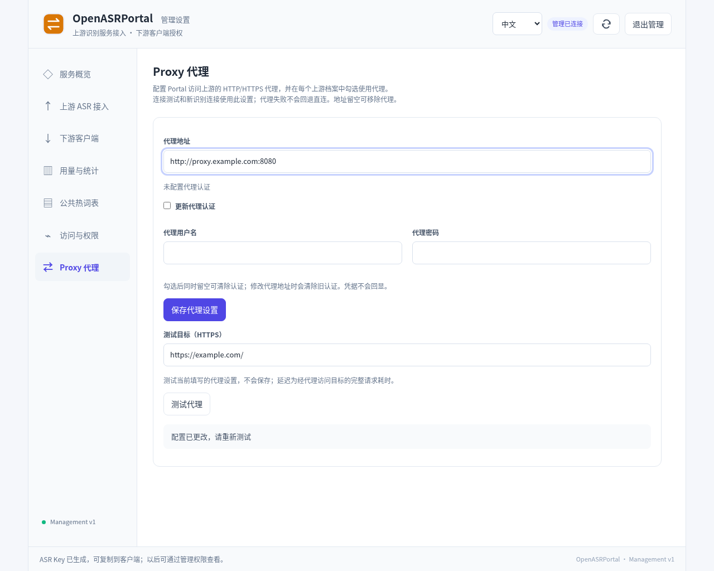
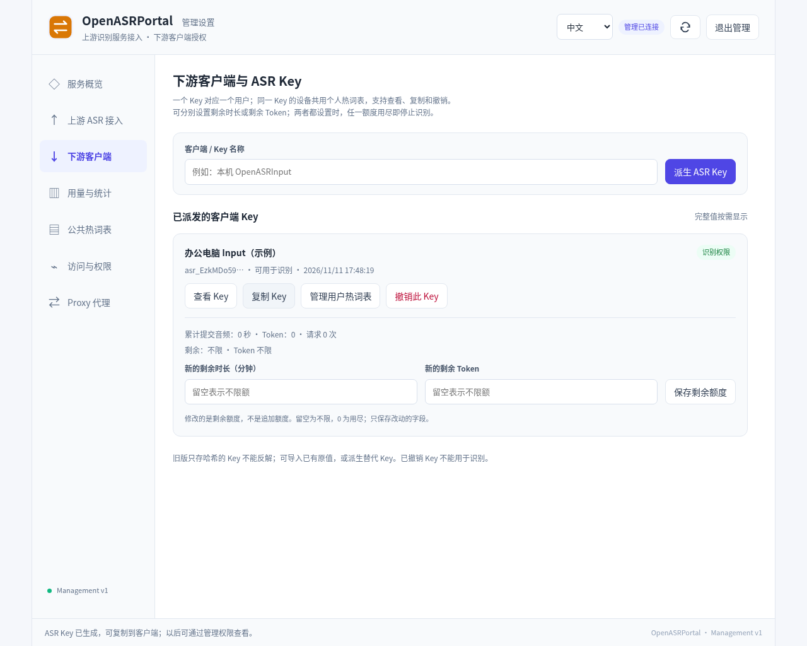
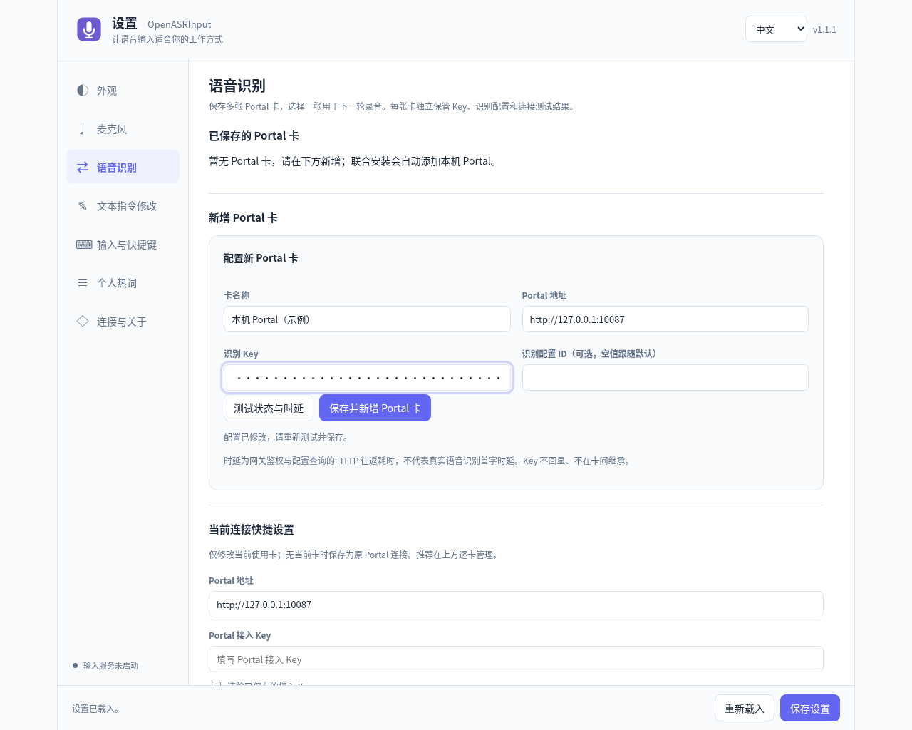

本文介绍的 Portal 上游是实际进行识别的云服务，下游是采集音频、使用识别结果的客户端。先配置一种上游，再给下游分配 Key，即可开始使用。云控制台布局和价格以服务商当前页面为准。
地址、凭据与配置流程
先分清三种凭据
| 连接方向 | 地址 | 凭据 |
|---|---|---|
| 浏览器 → Portal 管理 | http://127.0.0.1:10087/admin | 管理员密码，登录后取得短期管理 token。 |
| Input 等客户端 → Portal | http://127.0.0.1:10087 或远端 HTTPS origin | Portal 派生的客户端 ASR Key。 |
| Portal → 云端识别服务 | 对应提供商 WSS 端点 | 提供商 API Key。 |
客户端填写的 origin 只含协议、主机和可选端口，不带 /admin。上游 Key 只保存在 Portal；客户端 Key 不用于登录管理页。
新增上游档案
访问 Portal 的 /admin 并登录，进入上游 ASR 接入 → 增加服务接入。已有档案通常以只读卡片展示，先点击“修改 / 编辑”再调整，固定端点和模型仍保持只读。
- 设置唯一的配置 ID，如
doubao-main。ID 以字母或数字开头，可含字母、数字、点、下划线和短横线，最多 100 字符，创建后不能改。 - 填写便于识别的显示名称并选择提供商。一个提供商可以建多张卡，名称可改，客户端固定的是 ID。
- 填对应上游的 Key 和参数。网页 Key 框只填原值，不加
Bearer；协议认证头由程序处理。 - 选择是否使用全局代理，点击“测试上游连接”。测试使用当前表单，包括尚未保存的代理选择，结果显示在当前面板。
- 点击“保存接入配置 / 保存”，保持“启用”，需要时“设为默认”。测试成功不等于已保存，启用和默认操作也与保存各有边界。
- 在 Input 使用 Portal 地址与Portal 派生的客户端 ASR Key，固定这张 ID 或跟随默认，进行真实短句识别。
上游 Key 留在 Portal，不直接给 Input。同一提供商已有 Key 的字段会显示“已保存”，留空可保留原值；新建卡片不继承别的卡片凭据，换提供商需要新凭据。
| 上游 | 识别表现 | 个人热词 | 本地预算 |
|---|---|---|---|
| 豆包 | 流式预览，可选二遍修订 | 支持，受格式与保守字节预算限制 | 音频时长 |
| 百炼 | 流式 partial / final，服务端分句 | 支持，即时词与权重 | 音频时长、真实 Token |
| Soniox | 真实 partial，语义端点定稿 | 支持，上下文词，不传数值权重 | 音频时长；云端另按连接时长 |
| Boson | 分段 final，没有逐字 partial | 不支持会话热词 | 音频时长 |
豆包流式语音识别 2.0
开通项目与 API Key
- 打开豆包语音新版控制台，登录并按提示完成账号与服务开通。
- 在顶部项目选择中进入“管理项目”，创建项目，例如
openasr，再切回该项目。 - 进入“开通管理”，找到“豆包流式语音识别模型 2.0”并开通。以下示例使用小时版。
- 保持在同一项目中，进入“API Key 管理 / API 管理”，创建如
openasrportal的 Key，保存完整值。 - 检查项目中的资源额度、有效期与账户余额。API Key 有效不代表所有模型资源都已开通。
这里使用新版控制台的 API Key。若只看到旧式 APP ID 和 Access Token，应切换到新版入口；不要将它们拼接后放入 Portal Key 框。
填写 Portal 档案

| 字段 | 填写方式 |
|---|---|
| 配置 ID / 名称 | doubao-main / 豆包语音 2.0 |
| 提供商 | 豆包 · 实时语音识别 |
| 上游 API Key | 刚创建的完整项目 Key |
| WebSocket 地址 | 保留只读 wss://openspeech.bytedance.com/api/v3/sauc/bigmodel_async |
| 模型资源 | 2.0 小时版：volc.seedasr.sauc.duration |
| 二遍识别 | 先保留默认开启 |
| 使用全局 Proxy 代理 | 直连关闭；需要代理时先配置全局代理 |
2.0 并发版资源为 volc.seedasr.sauc.concurrent；volc.bigasr.sauc.* 属于旧 1.0 资源，必须与账号实际开通的服务匹配。页面语言选项只改变界面文字，豆包适配器没有识别语言列表字段，不要把 en,zh 填进模型资源。
二遍识别允许在初步结果之后继续修订语段。先保持开启，真正比较自己的录音准确率和结束等待时间后再决定是否关闭。热词当前按双向流式接口的 100-token 限制进行保守 UTF-8 字节筛选，不等于能送 100 个词，也不等于其他豆包接口的 5000 词能力；超长、含数字或不支持符号的词可能被过滤。
常见失败：无权限先核对项目与资源；鉴权失败核对新版完整 Key；额度用尽分别检查火山账户和 Portal 本地预算。测试通过后仍需保存并启用，再分别录一句中文与英文检查实际效果。
百炼 Qwen ASR Streaming
创建业务空间与模型授权
- 登录阿里云百炼控制台，完成账号和模型服务开通。以下以华北 2（北京）为例。
- 通过业务空间选择入口创建一个空间，例如
openasr，进入“业务空间管理”。 - 打开该空间的“模型权限流控设置”，搜索并授权完整名称
qwen-audio-3.1-asr-flash-streaming。 - 进入对应地域的 API Key 管理，创建 Key 时将“归属业务空间”选为刚授权的空间。
- 保存创建时显示的完整 Key。如果还设置了 Key 级自定义模型权限，也要包含这个完整 streaming 型号。
- 在该空间接入信息中取得 Workspace ID，准备与地域匹配的 WSS 地址。
授权相似的 HTTP 或 Realtime 模型不能替代 -streaming 型号；空间名称也不能替代 Workspace ID。
填写档案与地域地址

| 字段 | 填写方式 |
|---|---|
| 配置 ID / 名称 | bailian-main / 百炼流式识别 |
| 提供商 | 百炼 · Qwen ASR Streaming |
| 上游 API Key | 归属于已授权业务空间的 Key |
| 模型 | 只读 qwen-audio-3.1-asr-flash-streaming |
| 识别语种 | 中英文 / 混合语音先用 auto；明确需要时指定一种支持语种 |
| 断句静音 | 默认 800 ms，范围 200–6000 ms |
| 保留方言 | 默认关闭，按实际口述需要开启 |
北京地域的业务空间专属地址：
wss://{WorkspaceId}.cn-beijing.maas.aliyuncs.com/api-ws/v1/inference新加坡地域使用相应空间与 Key：
wss://{WorkspaceId}.ap-southeast-1.maas.aliyuncs.com/api-ws/v1/inference把 {WorkspaceId} 连同花括号替换为真实 ID。官方 WSS 根地址可自动补齐路径；旧共享域名 wss://dashscope.aliyuncs.com/api-ws/v1/inference 仍兼容，但按当前指南优先使用业务空间专属域名。不要用其他地域的 Key 配北京地址。
语言、断句与预算
百炼接受单个语种选择，auto 是自动识别，不能填 Soniox 风格的 en,zh。较短静音阈值让分句更早，较长阈值允许思考停顿；先使用 800 ms 基线，再用相同内容比较。
Portal 使用 DashScope 双向任务：发送 run-task，等待 task-started，持续上传一次 PCM 音频，停止时 finish-task 并等待 task-finished。partial 来自模型，没有反复 HTTP 识别来模拟预览。旧 HTTP 档案读取时会迁移模型和路径并保留 Key、ID 与配额，保存后持久化；云端仍需为新 streaming 型号授权。
百炼支持真实计费 Token 报告。累计值按增量扣减，最后用最终报告结算；缺少最终报告时 Token 限额账户会暂停，不能当作零用量。共用限额账户的 Token 限额流串行执行，最终结算也可能超过余额。因此 Portal 预算不是云端严格费用封顶。
常见失败：模型无权限查业务空间授权及 Key 归属；地址错误查 ID、地域、WSS 和路径；Key 无效查完整值与地域。测试、保存、启用后，再看客户端的实时预览和收尾定稿。
Soniox 实时 STT
开通与填写档案
- 打开 Soniox 控制台，建立账号并创建 API Key，核对余额与模型调用权限。
- 在 Portal 新增服务，提供商选择“Soniox · 实时语音识别”，ID 可用
soniox-main。 - 填写 Key，保留固定地址和模型，设置语言提示与端点参数。
- 需要代理时先选择代理路径，再测试、保存、启用，设为默认或让 Input 固定该 ID。

| 字段 | 值与含义 |
|---|---|
| 提供商 ID | soniox_realtime |
| WebSocket 地址 | 只读 wss://stt-rt.soniox.com/transcribe-websocket |
| 模型 | 只读 stt-rt-v6 |
| 语言提示 | 新卡默认英文、中文 en,zh；可选自动或单一语种 |
| 最大端点延迟 | 500–3000 ms，默认 2000 ms |
API 支持最多十个逗号分隔的两位语言提示，提示不限制识别其他语言；已有卡保留原选择。最大端点延迟表示讲话结束后语义端点等待上限，不是整个网络和推理响应一定在 2000 ms 内完成。
Soniox 会同时返回稳定词与临时词，Portal 只累计一次稳定前缀，并用新临时后缀替换旧后缀；语义 <end> 触发分段定稿。结束后还需等待上游 finished: true，不因断连而把临时文本当 final。
个人热词通过 context.terms 传递，不发送数值权重。Portal 保守限制选中上下文为 7000 UTF-8 字节。Soniox 文本 token 不是计费用量报告，所以不要配置 Token 预算；用本地音频时长额度，并在云控制台查看实际连接时长费用。空闲保活时间也可能计入云账单。
上游测试会上传 200 ms 静音并等待完成，产生少量真实用量。通过后用中英文短句验证 partial、停止后的定稿以及是否出现重复词。
Boson AI Higgs STT
账号与档案配置
- 登录 Boson 工作台并完成账号验证，在 API Keys 点击 Create API Key，保存完整的
bai-…Key。 - 检查 账单页和模型权限。符合条件的试用额度可能需要主动领取，创建 Key 不意味着额度自动到账。
- Portal 选择“Boson AI · Higgs STT”，设置如
boson-main的 ID、名称和 Key。 - 选择语种与断句静音，测试后保存并启用。

| 字段 | 填写方式 |
|---|---|
| WebSocket 地址 | 只读 wss://api.boson.ai/v1/realtime |
| 转写模型 | 只读 higgs-stt-3.1；底层 higgs-realtime 由适配器设置 |
| 识别语种 | auto 或 zh、en 等一个两位提示，不填 en,zh |
| 断句静音 | 600–3000 ms，默认 800 ms |
| 预算 | 音频时长，不设置 Token 额度 |
分段行为与排错
Boson 音频在录音时持续上传，但接口目前返回完成的输入转写，没有逐字 partial。Portal 在停顿、连续音频达到 15 秒或停止录音时提交分段。800 ms 静音等待还会叠加上游处理时间，所以“连接很快但说完要等一会儿”不一定是网络异常。
适配器使用手动轮次 turn_detection: null，不发送生成助手回复的 response.create。它只接受当前分段的输入转写事件，不把助手输出当识别文字。后一段等待前一段定稿，避免后来的语段覆盖尚未完成的结果。
本地能量判断会过滤低音量静音并保留最多 200 ms 前置音频；讲话太轻或持续背景噪声都会影响分段。若常常到 15 秒才出字，先查麦克风音量和噪声，再考虑降低静音等待。取消直接关闭流，不提交缓冲中的讲话。这个上游当前没有会话级热词。
测试会提交 200 ms 静音并等转写响应，验证的是模型权限而非仅握手。401 查完整 Key；429 insufficient_quota 查试用领取和余额，其他限流查并发与请求限制。Portal 按接收的客户端音频记本地时长，包含静音；云端过滤后的计费时长可能不同。
HTTP / HTTPS 代理
- 在管理页打开 Proxy 代理，填写从 Portal 服务所在环境可达的
http://或https://代理地址。 - 需要认证时单独填写。勾选“更新代理认证”可替换凭据；勾选后同时留空可清除认证。改变代理地址会清掉旧认证，除非同时提供新值。
- 点击“测试代理”，选择 HTTPS 测试目标；默认
https://example.com/。该动作使用当前设置，但不自动保存。 - 保存全局代理，在目标上游卡中勾选“使用全局 Proxy 代理”，再测试并保存该档案。
代理测试耗时包括代理连接、TLS 和目标响应，不是 ASR 首字延迟。测试目标可达也不证明某一家 ASR 已开通；代理应支持到上游 WSS 的 CONNECT。HTTPS 代理意味着到代理本身也使用 TLS，上游 WSS 仍需校验证书。源码运行使用 HTTPS 代理需 Python 3.11+，原生包带兼容运行时。
已勾选代理的档案在代理缺失或故障时明确报错，不自动绕过直连；未勾选的档案走直连。改变配置只影响新连接，现有流保持原路径。全局代理地址留空可以移除代理，随后核对各上游的代理开关。
如果代理在浏览器那台电脑而 Portal 在服务器，Portal 填 127.0.0.1 不会访问到浏览器机器。Docker 中同样先明确服务名、宿主接口和监听地址，再考虑修改识别参数。

下游客户端授权
派生 ASR Key
- Portal 管理页进入“下游客户端”，在“客户端 / Key 名称”填写使用者或设备名，例如“办公电脑 Input”。
- 点击“派生 ASR Key”，复制生成的完整 Key，并记录它对应的 Portal 地址。
- 按需要设置该 Key 的剩余分钟数并保存。空白表示不限额，0 表示用尽；输入 60 是设为剩余 60 分钟。
- 把 Portal origin、ASR Key 和可选的档案 ID 交给客户端。普通使用者不需要管理密码或上游 Key。

本机、远端与多设备
- 同机：客户端填
http://127.0.0.1:10087，对应本机 Portal。 - 远端：填服务器实际 HTTPS origin，例如
https://asr.example.com，证书须覆盖该域名。监听、防火墙和反向代理配置见远程部署。 - 多使用者：每人派生不同 Key，可分别记账、撤销和维护热词。
- 同一人多设备：共用 Key 会同时共享词表、余额和撤销状态；要独立额度就使用不同 Key。
轮换时先派生新 Key，更新客户端并验证，再撤销旧 Key。撤销不可恢复，并会取消旧 Key 的活动和待连接会话。删除本机连接卡不会撤销服务器端授权。
接入 Input
OpenASRInput
- 打开 Input 设置 →“语音识别”→“新增 Portal 卡”，填写名称、Portal origin 和 ASR Key。
- 识别配置 ID 留空可跟随 Portal 默认；必须使用固定模型时，填写 Portal 档案 ID。
- 点击“测试状态与时延”，然后“保存并新增 Portal 卡”，再在已保存的卡片上点击“使用此 Portal”。修改已有卡片时点击“保存此卡”。
- 确认麦克风和原生输入桥接，在普通编辑器中用 Shift+Space 开始、结束，等文字上屏。

默认与固定档案：Input 的配置 ID 留空时跟随 Portal 默认；填写固定 ID 时只使用对应档案。固定档案被删除、停用或耗尽后，要在客户端重新选择，单改 Portal 默认无效。
自定义客户端：HTTP / WebSocket v1
查询能力与档案
原生应用、脚本或自有服务可直接接入 Portal v1。它不是 OpenAI 文件转写接口，不能仅把第三方客户端的 Base URL 换成 Portal。调用者须实现以下会话流程。
下面为 Bash 示例。ASR_KEY 表示已在当前终端加载的客户端 Key；PORTAL 替换为实际地址：
PORTAL=http://127.0.0.1:10087
curl --fail-with-body -H "Authorization: Bearer $ASR_KEY" \
"$PORTAL/v1/capabilities"
curl --fail-with-body -H "Authorization: Bearer $ASR_KEY" \
"$PORTAL/v1/profiles"检查 protocolVersion 为 1，音频为 pcm_s16le / 16000 / 1。从 profiles 中选择存在、启用且预算可用的档案；partialResults、latencyClass 和热词能力用于决定界面表现。
创建与连接会话
curl --fail-with-body -X POST \
-H "Authorization: Bearer $ASR_KEY" \
-H 'Content-Type: application/json' \
-d '{"profileId":"doubao-main","purpose":"dictation","audio":{"encoding":"pcm_s16le","sampleRate":16000,"channels":1}}' \
"$PORTAL/v1/sessions"将 doubao-main 换成实际 ID；省略 profileId 才跟随默认。成功返回 201 和如下结构：
{
"sessionId": "session-example",
"ticket": "one-time-ticket-example",
"streamPath": "/v1/sessions/session-example/stream",
"ticketExpiresInMs": 29999
}使用客户端 WebSocket 库，将原 origin 的 HTTP / HTTPS 替换为 WS / WSS，加上返回的 streamPath 和 URL 编码后的 ?ticket=...。校验路径同源且对应当前 session；ticket 一次使用，按实际有效期尽快连接。不要把长期 ASR Key 放进 URL。
上传音频与处理结果
- 连接后等待
session.ready，核对音频格式和finalizeTimeoutMs。 - 用 WebSocket 二进制帧上传 16 kHz、单声道、16 位小端 PCM，不能附带 WAV / MP3 文件头。每块字节数须为偶数。
- 上传同时持续接收事件。先验证 sessionId 和连续 seq，再按 utteranceId / revision 替换预览。
- partial 的 text 是完整替换文本，不是追加片段；final 只提交一次。Boson 可以直接返回 final 而没有 partial。
- 正常停止发送文本 JSON
{"type":"audio.end"}，继续接收尾部结果，直到 finished；核对 finalCount 与唯一 final 数量一致。 - 取消发送
{"type":"session.cancel"}，或使用 ASR Key 调用DELETE /v1/sessions/{id}。取消不能当作成功完成。 - 收到 error 或连接异常时终止本轮。重试创建新 session 与 ticket，v1 不支持重放旧音频或断线续传。
完整字段、热词接口与错误码见 识别 API v1。当前默认总容量 8 个会话、单轮上限 300 秒，运行时以能力响应为准。配置管理另走管理 API，使用独立管理认证。
连接验证与常见错误
完成一轮验证
- 当前表单上游测试成功，显示正确直连或代理路径。
- 已保存、启用，预算可用；固定 ID 的客户端已选择正确 ID。
- Input 连接测试通过，卡片已保存并切为当前。
- 真实录一句中文或目标语种，正常停止，核对预览与定稿。Boson 没有逐字预览属于能力差异。
- 核对目标应用收到文字，Portal 统计归属正确；需要多语种时再录另一语种比较。
连接测试可能产生上游用量，麦克风校准更会重复调用多次识别；预算不足时先补足真实账户和 Portal 余额。不要用“测试按钮成功”替代真实识别质量检查。
默认档案与候补顺序
可建立“日常云识别”“本机离线”“备用账号”并排序。Input 留空配置 ID 时，新会话跟随默认；默认停用、删除或额度不足时按顺序找可用档案。显式固定 ID 的客户端不会自动换到其他模型，正在进行的录音也不会把剩余音频迁到候补服务。
给同一云账号建多张档案只是在 Portal 中分别记账，不会在云端自动划分多个独立预算。需要确认实际使用了谁，应查看档案与本轮统计，而不是只看当前默认按钮。
| 现象 | 优先检查 |
|---|---|
| 鉴权失败 / 401 | 是否填了正确层级的 Key、完整原值、地域或项目是否匹配。 |
| 模型无权限 | 豆包资源开通；百炼完整 streaming 型号与空间授权；其他提供商当前模型权限。 |
| 连接超时 / CONNECT 失败 | Portal 运行环境到上游或代理的可达性、代理认证与证书。 |
| 补额度后仍不能用 | 手动启用状态、Key 余额、上游余额、Token 阻断和客户端固定 ID。 |
| 有连接但长时间不出字 | 麦克风；Boson 分段与积压；上游网络与模型权限；不能仅依据连接测试耗时判断。 |
原始指南与官方资料
- 项目豆包开通指南 · 官方双向流式 API
- 项目百炼开通指南 · 官方 API Key 说明 · 地域与接入域名
- 项目 Soniox 指南 · 官方 WebSocket API
- 项目 Boson 指南 · 官方账号开通 · 现行计费
- 下游 API v1
- Portal 模型与端点配置实现
参考 Portal / Input 1.1.1 文档。截图为 1.1.1 实际配置界面，使用演示数据，未进行付费上游调用。文档与截图 © 2026 OpenASR contributors / MarmaladeCat，按 GPL-3.0-only 提供。